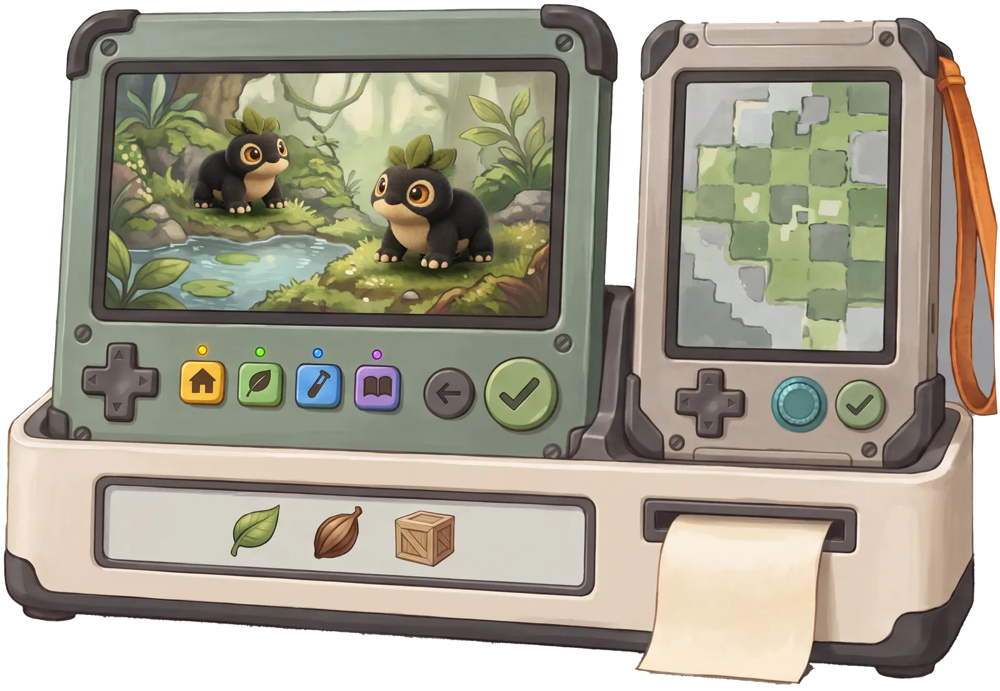
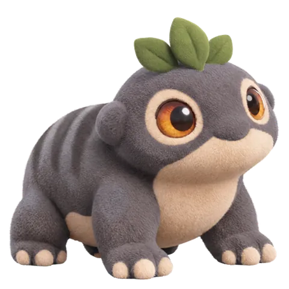
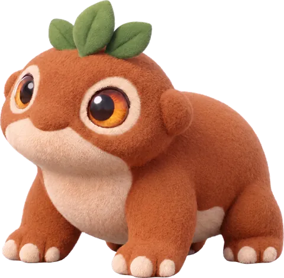
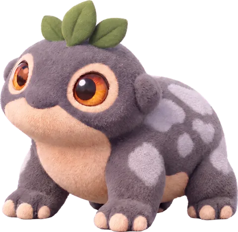

A small world, asleep under the fog.
Wake it with three little devices, and bring its mibis home.

The kit
Three devices, one world.
- Companiongoes out with you, everywhere you go.
- Stationstays home. Its vivarium keeps real hours.
- Caddyis where the two meet, and where the crates cross.

Out there
Go out into the fog.
Every step wakes a little of the ground. A call wakes a whole lot more.

Pods
It all starts with a pod.
Only a call hears what's buried. Dig it up and carry it home.

Coming home
Bring it home.
Dock the Companion, and the crate you sealed comes home to the Station.

At home
Read it before it opens.
At the Station, read a pod chapter by chapter. Then grow it, and meet who's inside.
Families
Every Loika its own.
Each Loika carries two copies of everything, drawn from both its parents.








The world
Twenty kinds, nine lands.
And a Loika in every one. Most stand about as tall as a clover leaf.
Meet all twentyBefore you play
A few plain answers.
- What do I need?
- A browser, on a phone or a laptop.
- Is there an account or a chat?
- No account and no chat. No loot boxes, and no rewards for coming back every day.
- What if I'm away?
- Nothing gets sick or leaves while you're away.
- Can I hold it?
- Not yet. The devices are designed, not made. The game plays in your browser.